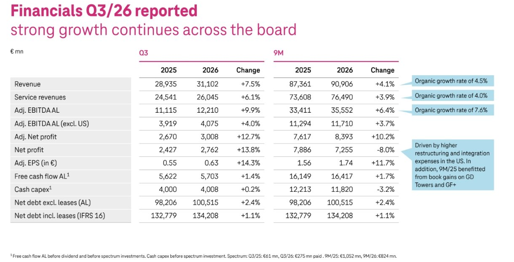
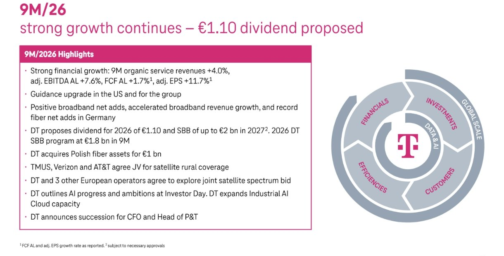

Quartalszahlen

Deutsche Telekom: Umsatz +7,5 % auf 31,1 Mrd. Euro, Prognose leicht erhöht – 1,10 Euro Dividende vorgeschlagen
$DTE
Die Deutsche Telekom wächst im dritten Quartal 2026 bei Umsatz und bereinigtem EBITDA, hebt Ergebnis- und Cashflow-Prognose leicht an und schlägt für 2026 eine Dividende von 1,10 Euro je Aktie vor.
Kurz gesagt
Umsatz: 31,1 Mrd. Euro (+7,5 %)
Bereinigtes EBITDA AL: 12,2 Mrd. Euro (+9,9 %)
- Wachstum auf breiter Front: Der Umsatz steigt organisch um 5,5 %, das bereinigte EBITDA AL organisch um 8,0 %. Der bereinigte Konzernüberschuss legt um 12,7 % auf 3,0 Mrd. Euro zu.
- Prognose leicht höher: Für 2026 erwartet die Telekom nun rund 47,6 Mrd. Euro bereinigtes EBITDA AL (bisher 47,4 Mrd.) und rund 20,1 Mrd. Euro Free Cashflow AL (bisher 19,8 Mrd.). Das bereinigte Ergebnis je Aktie bleibt bei rund 2,20 Euro.
- Dividende: Vorgeschlagen sind 1,10 Euro je Aktie für 2026 (Vorjahr: 1,00 Euro). Für 2027 sind bis zu 2 Mrd. Euro Aktienrückkauf vorgesehen.
Deutsche Telekom im dritten Quartal: Erwartungen übertroffen, die USA tragen das Wachstum
Die Deutsche Telekom hat im dritten Quartal 2026 die Markterwartungen übertroffen. Der Konzernumsatz stieg um 7,5 % auf 31,1 Mrd. Euro, Analysten hatten laut Finanztrends mit rund 30,6 Mrd. Euro gerechnet. Das bereinigte Ergebnis je Aktie lag mit 0,63 Euro über dem erwarteten Wert von 0,61 Euro (Konsens aus wenigen Analysten). Das bereinigte EBITDA nach Leasing (AL) wuchs um 9,9 % auf 12,2 Mrd. Euro. Den größten Anteil daran hat T-Mobile US. Dort stieg das EBITDA um 11,4 %. Ohne die USA wächst der Konzern deutlich langsamer. Vor den Zahlen drehte sich die Debatte um genau diese Abhängigkeit: Tim Höttges hatte zuletzt davor gewarnt, SpaceX den Eintritt in Mobilfunkmärkte zu erleichtern, nachdem ein US-Frequenzerwerb Starlink zum Mobilfunkanbieter machen könnte. Konkrete Folgen für T-Mobile US zeigen die Zahlen noch nicht.
Die wichtigsten Zahlen im Überblick
| Kennzahl (Mio. Euro) | Q3 2025 | Q3 2026 | Veränderung |
|---|---|---|---|
| Konzernumsatz | 28.935 | 31.102 | +7,5 % |
| Service-Umsatz | 24.541 | 26.045 | +6,1 % |
| Bereinigtes EBITDA AL | 11.115 | 12.210 | +9,9 % |
| Free Cashflow AL | 5.622 | 5.703 | +1,4 % |
| Bereinigter Konzernüberschuss | 2.670 | 3.008 | +12,7 % |
| Konzernüberschuss | 2.427 | 2.762 | +13,8 % |
| Bereinigtes Ergebnis je Aktie (Euro) | 0,55 | 0,63 | +14,3 % |

Ausschnitt aus der Präsentation der Deutschen Telekom zum Q3 2026 (Folie 23, „Financials Q3/26 reported“) · Original.Bereinigt um Währungs- und Konsolidierungseffekte wuchsen der Umsatz um 5,5 % und das EBITDA AL um 8,0 %. Ohne das US-Geschäft lag das organische EBITDA-Wachstum bei 3,4 %. Nach neun Monaten steht der Umsatz bei 90,9 Mrd. Euro (+4,1 %) und das bereinigte EBITDA AL bei 35,6 Mrd. Euro (+6,4 %).
Was gut lief
- USA: T-Mobile US steuert den größten Teil des Wachstums bei. Das bereinigte EBITDA AL stieg im Quartal um 11,4 % auf 9,4 Mrd. US-Dollar. Die Zahl der Postpaid-Konten wuchs auf rund 35,0 Mio. Das Ziel von einer Million Netto-Neukunden für 2026 hält die Telekom laut Präsentation ein.
- Deutschland: Rekord bei Glasfaser-Anschlüssen (FTTH): +190.000 Netto-Zugänge im Quartal. Im Mobilfunk kamen 284.000 Vertragskunden der Eigenmarke hinzu. Das organische EBITDA-Wachstum lag bei 4,1 %, die Service-Umsätze stiegen organisch um 1,9 %.
- Europa: Umsatz +4,2 % auf 3,3 Mrd. Euro, bereinigtes EBITDA AL +6,3 % auf 1,3 Mrd. Euro.
- Systemgeschäft (T-Systems): Umsatz +6,5 % auf 1,1 Mrd. Euro, Auftragseingang der letzten zwölf Monate 4,3 Mrd. Euro (+2,0 %).
- Bilanz: Die Nettoverschuldung ohne Leasing beträgt 100,5 Mrd. Euro, das entspricht dem 2,17-Fachen des EBITDA AL. Die Ratings von Fitch (A−), Moody’s (A3) und S&P (A−) sind stabil.
Was weniger gut lief
- Cashflow: Der Free Cashflow AL wuchs nur um 1,4 % auf 5,7 Mrd. Euro, deutlich langsamer als das Ergebnis. Er ist vor Dividenden und Frequenzinvestitionen gerechnet.
- Konzernüberschuss nach neun Monaten: Er liegt mit 7,3 Mrd. Euro um 8,0 % unter dem Vorjahr, obwohl der bereinigte Überschuss um 10,2 % auf 8,4 Mrd. Euro stieg. Die Telekom nennt zwei Gründe: höhere Restrukturierungs- und Integrationskosten in den USA und Buchgewinne aus den Verkäufen von GD Towers und GlasfaserPlus im Vorjahr.
- Wachstum ohne USA: Das bereinigte EBITDA AL außerhalb der USA stieg um 4,0 %, deutlich langsamer als im Konzern. Die Service-Umsätze außerhalb der USA wuchsen organisch um 2,9 %.
- Investitionen: Der Cash Capex lag nach neun Monaten mit 11,8 Mrd. Euro um 3,2 % unter dem Vorjahr. Die Telekom erwartet im vierten Quartal einen Nachholeffekt.
Prognose 2026
| Kennzahl | Bisher | Neu |
|---|---|---|
| Bereinigtes EBITDA AL | ca. 47,4 Mrd. Euro | ca. 47,6 Mrd. Euro |
| Free Cashflow AL | ca. 19,8 Mrd. Euro | ca. 20,1 Mrd. Euro |
| Bereinigtes Ergebnis je Aktie | ca. 2,20 Euro | ca. 2,20 Euro |
| Verschuldung (Nettoschulden/EBITDA AL) | höchstens 2,75 | höchstens 2,75 |
Die Prognose geht von einem Wechselkurs von 1,13 US-Dollar je Euro aus. Bei 1,15 US-Dollar läge das EBITDA AL laut Präsentation bei rund 47,1 Mrd. Euro. Für 2027 nennt die Telekom ein bereinigtes Ergebnis je Aktie von rund 2,50 Euro und einen Free Cashflow AL von 21,0 Mrd. Euro.
Dividende und Aktienrückkauf
Die Telekom schlägt für 2026 eine Dividende von 1,10 Euro je Aktie vor, vorbehaltlich der Zustimmung der Gremien und der Hauptversammlung. Im Vorjahr waren es 1,00 Euro, 2024 0,90 Euro und 2023 0,77 Euro. Seit 2023 ist die Dividende damit um 42,9 % gestiegen. Aus dem Aktienrückkaufprogramm 2026 sind nach neun Monaten bereits 1,8 Mrd. Euro umgesetzt. Für 2027 sind bis zu 2 Mrd. Euro vorgesehen.

Ausschnitt aus der Präsentation der Deutschen Telekom zum Q3 2026 (Folie 4, „9M/26 strong growth continues“).Weitere Meldungen aus der Präsentation
- Glasfaser in Polen: Die Telekom übernimmt polnische Glasfaser-Assets für 1 Mrd. Euro.
- Satellit: T-Mobile US, Verizon und AT&T vereinbaren ein Gemeinschaftsunternehmen für die Mobilfunk-Versorgung ländlicher Gebiete per Satellit. Zudem wollen die Telekom und drei weitere europäische Betreiber ein gemeinsames Gebot für Satelliten-Frequenzen prüfen.
- Künstliche Intelligenz: Auf dem Investor Day hat die Telekom Fortschritte und Ziele bei KI vorgestellt und baut die Industrial-AI-Cloud aus.
- Personal: Für den Finanzvorstand und den Leiter von „P&T“ hat der Konzern die Nachfolge angekündigt. Details nennt die Präsentation nicht.
Einordnung für Anleger
Die Zahlen sind solide: Das Ergebnis wächst klar schneller als der Umsatz, die Prognose steigt zum zweiten Mal im Jahresverlauf leicht, und die Dividende wächst stetig. Zugleich hängt ein großer Teil des Wachstums am US-Geschäft von T-Mobile US und damit am Dollar-Kurs. Außerhalb der USA wächst der Konzern deutlich langsamer. Auch der Cashflow hält mit dem Ergebnis nicht Schritt. Die Zahlen sind Unternehmensangaben und keine Anlageberatung.
Weitere Quellen: Finanztrends (Analystenerwartungen), Börse Express (SpaceX-Warnung).
Quelle: Deutsche Telekom, Präsentation zum Q3 2026 vom 5. November 2026 · Original
Hinweis: Dieser Text dient der allgemeinen Information und ist weder Anlage-, Steuer- noch Rechtsberatung. Kapitalanlagen sind mit Risiken verbunden, bis hin zum Totalverlust.